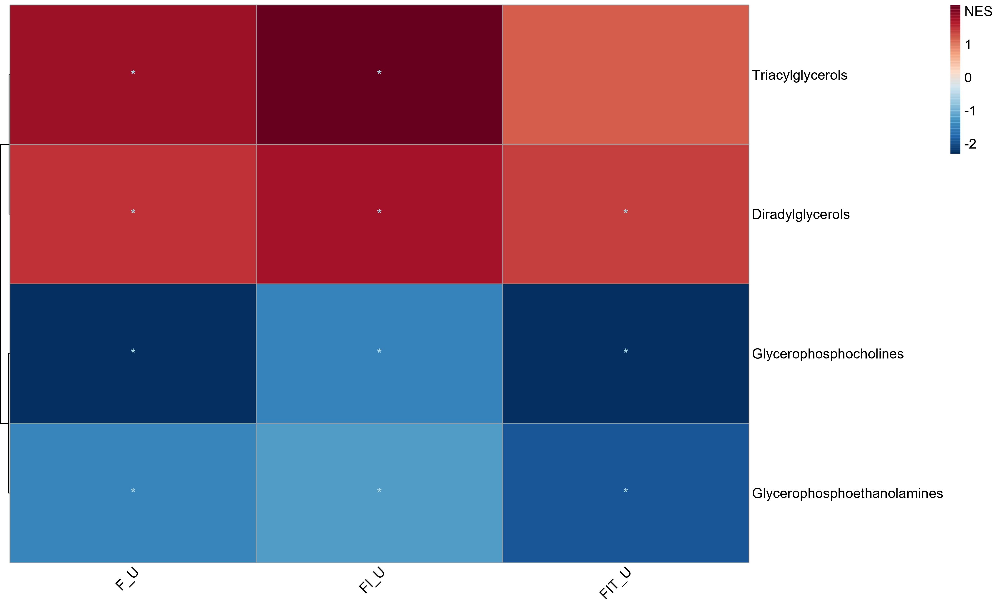
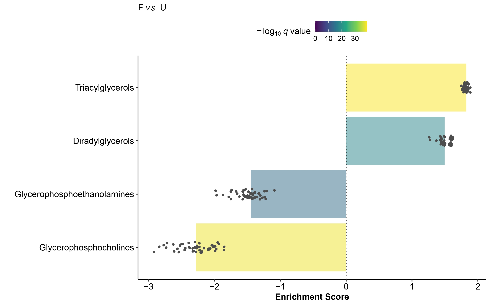

MSEA enrichment - single cell metabolomics
Bishoy Wadie
MSEA_enrichment-single_cell_metabolomics.RmdSingle-cell metabolomics generates output similar to scRNA-Seq, resulting in a matrix of metabolites (m) by cells (c), where values represent the abundance of each metabolite per cell. As with any single-cell analysis pipeline, enrichment analysis is typically one of the final steps to interpret the differential markers identified earlier.
While Overrepresentation Analysis (ORA) focuses on the identity of selected markers for enrichment, it does not account for their abundance. To incorporate abundance, ranking-based methods are preferred, with Metabolite Set Enrichment Analysis (MSEA) being the most widely used enrichment method for both bulk and single-cell metabolomics. In metabolomics, MSEA tools typically require a list of compounds and their associated concentrations as input, primarily for targeted metabolomics. The most common ones are MSEA and MetaboAnalyst. We recommend users explore these tools for more information on MSEA.
For MS1-based metabolomics datasets, particularly in imaging MS, the inherent molecular ambiguity in metabolite identification complicates downstream analyses, including enrichment. To our knowledge, no other metabolite enrichment method addresses isomeric/isobaric ambiguity in MSEA.
In this notebook, we demonstrate how to use S2IsoMEr for
MSEA enrichment in single-cell metabolomics datasets while accounting
for isomeric/isobaric ambiguity. The single-cell dataset used is from
the SpaceM paper, which models NASH by stimulating Hepa-RG cells with
fatty acids and other inhibitors compared to a control, followed by
MALDI imaging MS.
The data is freely available in MetaboLights.
Dataset
The single-cell dataset used is from the SpaceM paper, which models NASH by stimulating Hepa-RG cells with fatty acids and other inhibitors compared to a control, followed by MALDI imaging MS.
The data is freely available in MetaboLights.
Download single-cell matrices and associated metadata
NASH_scm contains the single-cell metabolite matrix
which will be main input as well as condition per cell in
NASH_scm$metadata. These are the main required files to run
single-cell metabolomics enrichment. condition_metadata
contains the METASPACE dataset
names for each replicate, while metaspace_annotations
contains the annotation results for each dataset in the SpaceM
project on METASPACE. We will use the annotation results and
corresponding FDR thresholds to select metabolites as input query and
corresponding universe for enrichment.
NASH_scm_tmp = tempfile()
download.file("https://zenodo.org/records/13318721/files/NASH_scm_dataset.rds", destfile = NASH_scm_tmp)
NASH_scm = readRDS(NASH_scm_tmp)
condition_metadata_tmp = tempfile()
download.file("https://zenodo.org/records/13318721/files/spacem_scm_matrices.rds", destfile = condition_metadata_tmp)
condition_metadata = readRDS(condition_metadata_tmp)[["metaspace_dataset_names"]]
metaspace_annotations_tmp = tempfile()
download.file("https://zenodo.org/records/13318721/files/SpaceM_metaspace_ds_annotations.rds", destfile = metaspace_annotations_tmp)
metaspace_annotations = readRDS(metaspace_annotations)Prepare the input data
scm = NASH_scm$scm %>%
as.matrix() %>%
t()
conds = NASH_scm$metadata %>%
column_to_rownames("Cell")
conds = conds[colnames(scm),]
conds_unique = conds %>%
dplyr::distinct()
metaspace_annotations = metaspace_annotations %>%
dplyr::left_join(condition_metadata, by = c("ds_name" = "dataset_name")) %>%
dplyr::rename("Replicate" = "Condition") %>%
dplyr::left_join(conds_unique)MSEA
In this notebook, we will run MSEA for all conditions against the
control. We will follow the same first steps for object initialization
as introduced in the ORA vignette,
check it out for more information on the parameters passed to the
initEnrichment function.
Additional arguments to initEnrichment that wasn’t used
for ORA but
needed for MSEA include :
-
ranking.by: Ranking metric for MSEA, supported options are :logFC: Log2 Fold change. Most common and easier to interpretwilcox.test: Wilcoxon rank sum statistic (signed based on LFC sign to improve interpretation)t.test: Student’s t-Test One-tailed (signed based on LFC sign to improve interpretation)BWS: Baumgartner-Weiss-Schindler test statistic (signed based on LFC sign to improve interpretation)
gsea.method: MSEA method. Based on either KS-signed method or fgsea. We recommend using fgsea
Note : BWS was recommended as an alternative to Wilcoxon
rank sum test in this paper.
While we support BWS as a ranking metric, we recommend
double checking the interpretation of the results compared to Log2 Fold
changes which are more commonly used.
Following object initialization, we call Run_enrichment
as before which internally calls Run_bootstrap_MSEA. From
the additional list of arguments to Run_bootstrap_MSEA we
recommend defining the following arguments to
Run_enrichment :
n_bootstraps: Number of bootstrap iterations. The default is 50, but increasing this number generally improves accuracy, though it will slow down the process. Adjust according to your needs. We recommend a minimum of 50 and a maximum of 1000. 100 is acceptable.min_pathway_size: The minimum number of metabolites that must be present in a given term for it to be considered
desired_fdr = 0.1
desired_annot_db = "HMDB"
Multi_cond_res = list()
MSEA_results = list()
for (c in c("F", "FI", "FIT")){
cond_x = "U"
cond_y = c
annots_des_fdr = metaspace_annotations %>%
dplyr::filter(Condition %in% c(cond_x, cond_y),
fdr <= desired_fdr,
str_detect(db, desired_annot_db)) %>%
pull(formula_adduct) %>%
intersect(rownames(scm))
input_scm = scm[annots_des_fdr,]
MSEA_obj = initEnrichment(scmatrix = input_scm, conditions = conds$Condition,
enrichment_type = "MSEA",annot_db = desired_annot_db,
consider_isomers = T, consider_isobars = T,
polarization_mode = "positive",
background_type = "sub_class",
molecule_type = "Metabo",
condition.x = cond_x,
condition.y = cond_y,
ranking.by = "BWS",
gsea.method = "fgsea")
MSEA_res = Run_enrichment(object = MSEA_obj,report_ambiguity_scores = T)
enrich_res = MSEA_res$enrichment_analysis$enrichment_results %>%
dplyr::mutate(condition.x = "U",
condition.y = c)
Multi_cond_res[[c]] = enrich_res
MSEA_results[[c]] = MSEA_res
}
Multi_cond_res = Multi_cond_res %>% dplyr::bind_rows()For detailed information about the output, check out documentation
?Run_bootstrap_MSEA.
Visualization
Multi-condition Heatmap
plot_MSEA_Multi_cond(combined_MSEA_res = Multi_cond_res,
alpha_cutoff = 0.05)
Barplot
barplot_MSEA_boot(object = MSEA_results[["F"]],
q.value.cutoff = 0.2, by.statistic = "ES")